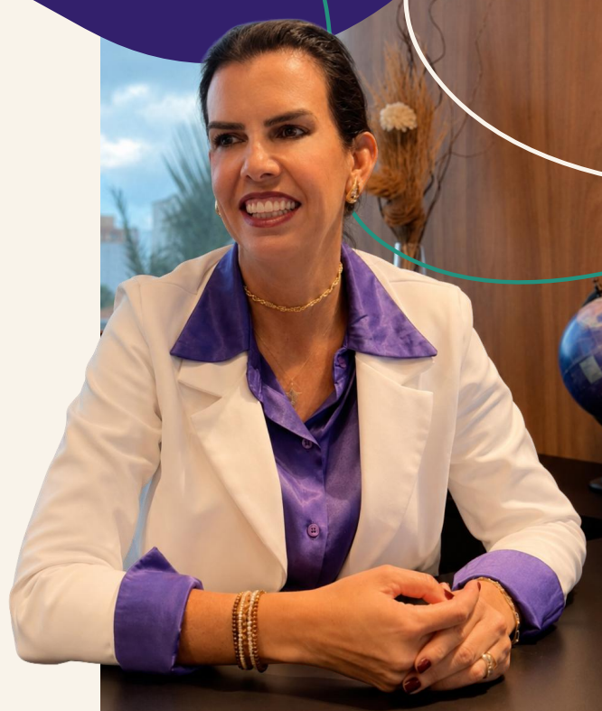

Princípio
Uma escola só amadurece quando as pessoas crescem junto com ela.

Nexara Consulting
Pessoas conectadas transformam escolas.
Estruturamos pessoas, estratégia e governança para o crescimento acontecer sem perder quem o sustenta.
Quem somos
A Nexara conecta pessoas, decisões e cultura. Transformamos desafios humanos em estruturas claras, práticas e sustentáveis para toda a comunidade escolar.
Uma escola só amadurece quando as pessoas crescem junto com ela.
Ser referência em maturidade organizacional para escolas brasileiras.
Fortalecer quem educa para transformar o futuro de toda a comunidade.
Por que agir agora
Esses não são problemas isolados. São sintomas de um ecossistema humano que precisa de estrutura.
Tudo chega na direção.
Ninguém sabe até onde decidir.
Turnover que corrói vínculo.
Saem sem escuta prévia.
Cresce em alunos, não em processos.
Afastamentos sem causa nomeada.
Promoções por percepção.
Os mesmos desgastes todo ano.
Sem indicadores de pessoas.
O custo de não agir
Operar sem estrutura sai caro em horas, turnover e evasão. A NR-1 já prevê penalidade para risco psicossocial não gerenciado.
Serviços
Diagnóstico, desenho e implantação de estruturas para pessoas, cultura, liderança e governança.
Acompanhamento próximo para dirigentes e lideranças transformarem intenção em decisão e rotina.
Encontros que mobilizam educadores, famílias e gestores em torno de desafios humanos reais.
Atuações
O ecossistema humano
Quando uma dimensão se desequilibra, toda a escola sente. Quando uma se fortalece, as outras se beneficiam. A Nexara estrutura as três, de forma integrada e com método proprietário.
Entrada, desenvolvimento, pertencimento, saúde e sustentação, do onboarding à liderança que apoia no cotidiano.
Clareza de propósito, portes e combinações calibrados à realidade da escola, não a um pacote de prateleira.
Rituais, papéis e indicadores que liberam a gestão e transferem autonomia para a instituição.
O ecossistema não tem peça isolada: quando o professor está sobrecarregado, a família percebe e o aluno sente.
Quem educa e sustenta a escola.
Quem escolhe, paga e recomenda.
Quem aprende quando o ecossistema funciona.
Quem opera e sustenta a instituição.
Qual o perfil da sua escola?
300 – 800 alunos
Entrada natural: VITA™ ou NXF™
VITA™ + NXF™ · VITA™ + ZELOS™ · NXF™ + LÍDER™
800 – 1.500 alunos
Entrada natural: VITA™ ou NXF™
VITA™+LÍDER™+ZELOS™ · NXF™+AXIS™+LÍDER™ · VITA™+AXIS™+ÁGORA™
1.500+ alunos ou redes
Entrada natural: VITA™ ou AXIS™
Ecossistema completo — 5 a 7 métodos · NXF™+NEXO™+ÁGORA™
Nenhuma escola precisa resolver tudo de uma vez. Cada etapa fortalece a próxima.
Entender onde está o maior risco ou oportunidade. Começar com evidência, não com percepção.
Organizar cargos, cultura, liderança, relações, inclusão ou dados.
Fortalecer lideranças, instalar rituais e consolidar mudanças na rotina.
Acompanhar a evolução com indicadores. Percepção vira dado, dado vira decisão.
Operar com autonomia. A escola conduz sua maturidade; a Nexara acompanha pelo Monitor.
O que muda quando a Nexara atua
Pesquisa Nacional 2026
Existe muito dado pedagógico e financeiro no setor, e quase nenhum sobre a estrutura humana que sustenta a operação. A Nexara está lançando o primeiro estudo nacional sobre o tema.
São 45 campos, 9 telas e cerca de 8 minutos de resposta. O campo abre em 19 de agosto de 2026, com recorte agregado e nenhuma escola identificada na publicação. Quem responde recebe o relatório antes da abertura.
O estudo cobre quatro jornadas — professor, colaborador, família e aluno — e lê governança por quatro instrumentos combinados. Instrumento que declara o que não mede vale mais que o que finge cobrir tudo.
Conheça a Nexara
Assista ao filme da Nexara Consulting e descubra como pessoas, estratégia e governança podem crescer juntas.
Experimente o ecossistema
Uma experiência de 75 segundos: leia situações do universo escolar, escolha a força que deve agir e descubra como Pessoas, Estratégia e Governança mantêm o ecossistema em movimento.


Fundadora
Fundadora da Nexara Consulting. Mais de 25 anos em transformação organizacional e 15 dedicados ao setor educacional.
Passou por Ericsson, Eaton e Tata Consultancy e, nos últimos 15 anos, por dentro de uma das maiores redes de educação do Brasil. Conhece de dentro como a cultura se forma e como as relações sustentam o dia a dia escolar.
"Escola madura não é a que mais cresce. É a que cresce sem perder quem faz o crescimento acontecer."
Casos de campo
Liderança da implantação de novo modelo de gestão estratégica, com OKRs, ritos executivos e governança para 16 iniciativas.
Maior previsibilidade da execução e integração entre áreas.
Estruturação da área de People Analytics e modernização dos processos de RH.
eNPS 76% → 83% · lNPS 49% → 58% · fechamento de vagas 35 → 17 dias.
Evolução dos subsistemas de RH em operação com 2.000+ colaboradores no Brasil.
Gestão integrada à estratégia e lideranças preparadas para decidir.
Seja uma escola parceira
Conte brevemente sobre sua escola. A mensagem será enviada diretamente para a equipe Nexara.
Escolas que estruturam seu ecossistema humano não dependem de heroísmo diário. Dependem de método, clareza e lideranças preparadas.